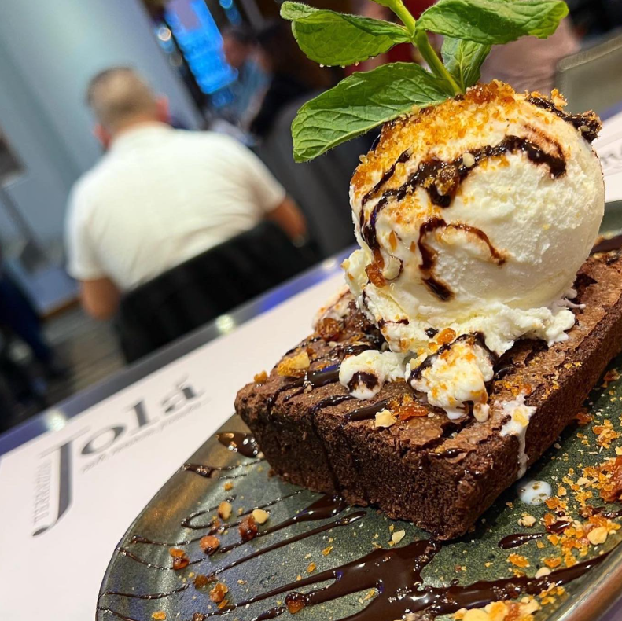

BROWNIE CON HELADO
Brownie casero de chocolate semiamargo, tibio y húmedo, coronado con una bola de helado artesanal de vainilla, salsa de chocolate caliente y crocante de caramelo con nueces.
La unión perfecta entre lo cálido y lo frío, lo suave y lo crujiente. Un postre pensado para los verdaderos amantes del chocolate.
SUGERENCIA DEL CHEF
ideal para compartir… aunque probablemente no quieras.
